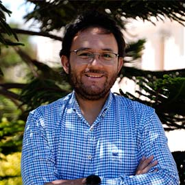

 |
RODRIGO VEJAR ASEM
Profesor Asistente
Departamento de Matemáticas
Universidad de La Serena
La Serena - Chile.
E-mail (sólo asuntos académicos): rodrigo.vejar**userena.cl ( ** = @)
Perfiles: MathSciNet, ORCID, Web of Science. Google Scholar.
|
Experiencia Docente (Listado de asignaturas dictadas: click aquí.)
- 2022-II - a la fecha : Profesor Asistente. Departamento de Matemáticas, Facultad de Ciencias, Universidad de La Serena
- 2019 II - 2022 I. Profesor a Honorarios. Departamento de Matemática, Facultad de Ciencias, Universidad del Bío-Bío
- 2019 I - 2022 I. Profesor Instructor (Part-time). Departamento de Ingeniería Matemática, Facultad de Ciencias Físicas y Matemáticas, Universidad de Concepción.
- 2011 II - 2017 I. Ayudante. Departamento de Ingeniería Matemática, Facultad de Ciencias Físicas y Matemáticas, Universidad de Concepción.
|
Educación
- 2015 - 2019: Doctorado en Ciencias Aplicadas, mención Ingeniería Matemática
Universidad de Concepción, Chile.
Tesis disponible aquí .
- 2009 - 2014: Astrónomo, Universidad de Concepción, Chile.
- 2009 - 2013: Licenciatura en Astronomía, Universidad de Concepción, Chile.
|
Intereses de Investigación
- Esquemas de Diferencias Finitas.
- Esquemas de Volúmenes Finitos.
- Métodos Numéricos para Física e Ingeniería.
- Algoritmos computacionales para fenómenos físicos.
|